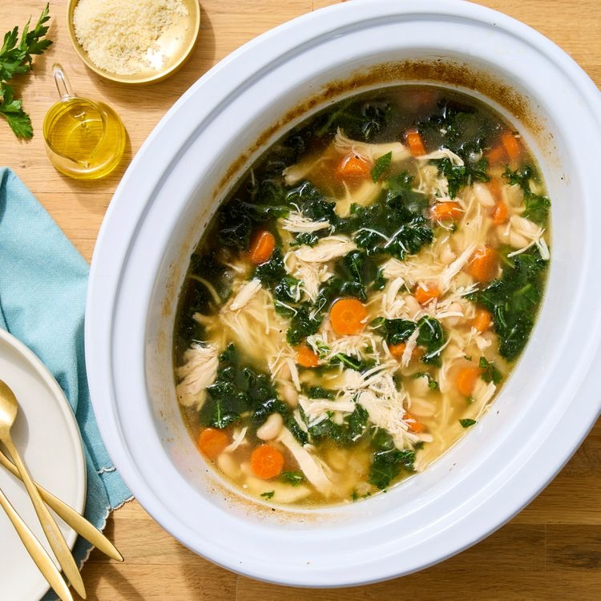
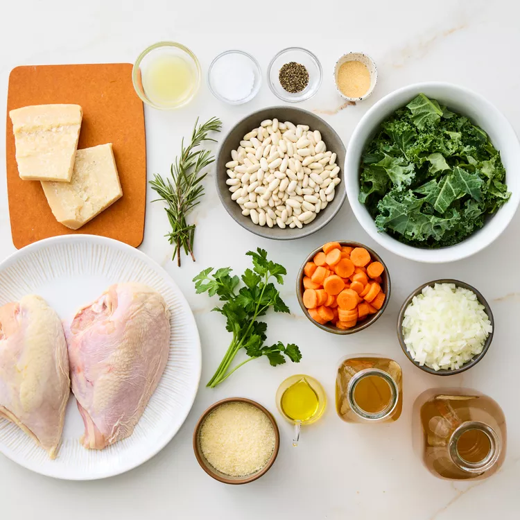

Chicken and White Bean Stew
I found this recipe when looking for ways to reduce my salt intake. It's a delicious stew
from Eating Well
When the cold weather inspires a warm, cozy stew, this recipe is a great go-to!

Ingredients
- 1 can Cannellini Beans
- 6 cups Unsalted Chicken Broth
- 1 Yellow Onion: chopped
- 2 Carrots: sliced
- 1 Parmesan rind
- 2/3 cup Parmesan Cheese: grated
- 1 tsp Rosemary: finely chopped
- 1 tsp Garlic Powder
- 1 1/2 tsp Salt: divided
- 2 Chicken Breasts: bone-in, skin-on
- 4 cups Kale: washed, chopped, and stemmed
- 1 1/2 Tbsp Lemon Juice
- 1/2 tsp Pepper
- 2 Tbsp Extra Virgin Olive Oil
- 1/4 cup Italian Parsley Leaves

Steps
- Combine drained soaked beans, 6 cups broth, 1½ cups onion, 1½ cups carrots, 1 (4-ounce) Parmesan rind and 1 teaspoon each rosemary, garlic powder and salt in a 6-quart slow cooker.
Place chicken on top of the mixture.
Cover and cook on Low until the beans and vegetables are tender, 7 to 8 hours.
- Transfer the chicken to a clean cutting board and transfer about ¾ cup of the beans to a small bowl;
let the chicken stand until cool enough to handle, about 10 minutes.
Shred the chicken, discarding skin and bones.
Mash the beans with the back of a fork until creamy.
- Meanwhile, stir 4 cups kale into the mixture in the slow cooker.
Cover and cook on High until the kale is tender, 10 to 15 minutes.
- Return the chicken to the slow cooker and stir in the mashed beans, 1½ tablespoons lemon juice, ½ teaspoon pepper and the remaining ½ teaspoon salt.
Discard the Parmesan rind.
Divide the stew among 8 bowls; drizzle with 2 tablespoons oil and garnish with ⅔ cup Parmesan and ¼ cup parsley.